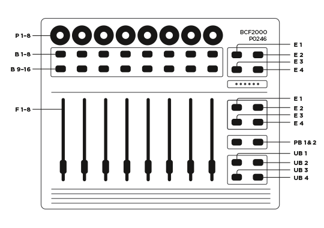

Important note: For the script to work, you need to load the
Bitwig
Studio preset into the BCF2000 using the BC-Manager.
| EB 1 |
Shift. |
| EB 2 |
Toggle Pan, Send and Macro Page. |
| EB 3 |
Alt. |
| UB1 |
Previous Track Bank |
| UB2 |
Next Track Bank |
| UB3 |
Note Editor View |
| UB4 |
Mixer View |
| Shift + UB3 |
Automation Editor View |
| Shift + UB4 |
Device View |
| PB 1&2 |
On the Device Page: Select previous/next Preset
On the Send page: Select previous/next Send.
|
| Alt + PB 1&2 |
On the Device Page: Select previous/next Preset Category. |
| F 1-8 |
Volume. |
| P 1-8 |
Pan, Send or Macros. |
| B 1-8 |
Toggle Solo. |
| B 9-16 |
Select Track. |
| Shift + B 1-8 |
Toggle Mute. |
| Shift + B 9-16 |
Toggle Arm. |